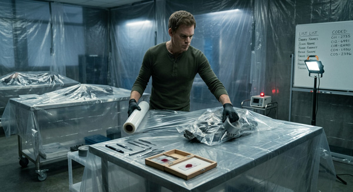
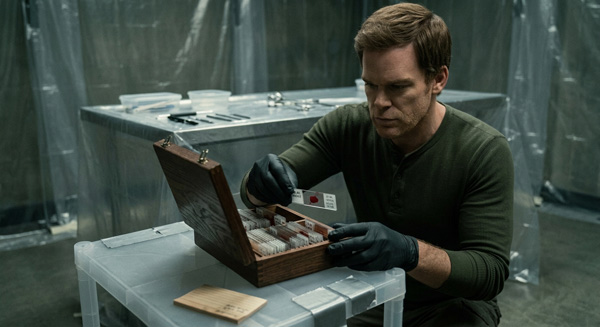
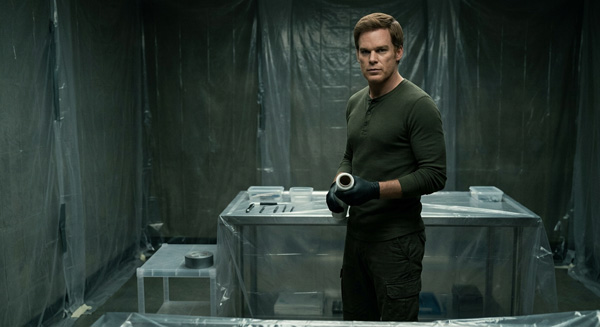
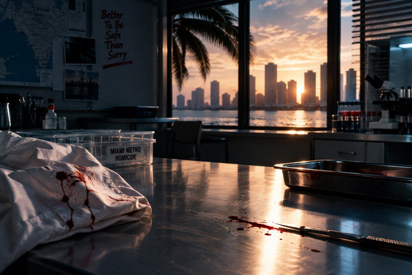

Gallery
Miami Beach, where Dexter’s sunny life hides a much darker secret.

Dexter preparing his kill room with plastic sheeting.

Dexter admiring his collection of blood slides.
Miami at night, where Dexter’s dark side comes alive.

Dexter holding the plastic wrap, almost ready.
Miami Metro Police headquarters, where Dexter works by day.
The view from Dexter’s desk at Miami Metro.

The view from the Miami Metro lab, where Dexter analyzes blood
evidence.
Dexter's boat Slice of Life moored at a marina dock